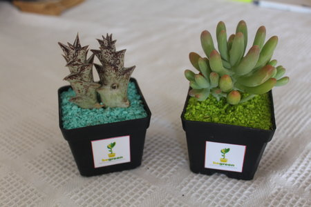
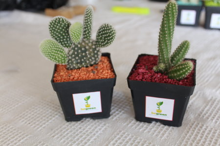

Descripción
Una planta desértica que puede ayudar en la liberación de las energías que libertan las personas y los electrodomésticos. Los campos electromagnéticos de baja frecuencia provocan contaminación electromagnética que es perjudicial para nuestra salud pues estos campos de origen artificial pueden llegar a provocar a largo o medio plazo graves enfermedades en nuestro organismo y problemas de falta de energías o fatiga, irritabilidad, agresividad, trastornos del sueño e, incluso, inestabilidad emocional, falta de concentración y dolores de cabeza frecuentes. Sin embargo, lo siembra y posesión de cactus evitan estos problemas que provocan las radiaciones emitidas por ordenadores, televisores, electrodomésticos y teléfonos móviles; restaurando las alteraciones provocadas en el ambiente por la contaminación electromagnética.


Información científica
| Nombre común |
Cactus |
| Nombre científico |
Cactácea |
| Familia |
Cactácea |
| Clase |
Magnuliophita |
| Reino |
Plantae |
| Orden |
Caryophyllales |
Crecimiento
Los Cactus presentan un amplio abanico de formas y tamaños. Así, podemos encontrar cactus esféricos, cilíndricos, con hojas puntiagudas, en forma de raquetas, entre otros. En cuanto a tamaño hay una amplia diversidad. Por ejemplo, el cactus más grande es el “Pachycereus pringlei”, con un tamaño medido que ronda los 20 metros. Por contra tenemos el “Blossfeldia liliputiana”, el cactus más pequeño que existe. Su diámetro es de 1 cm en su edad adulta. El "Sigo Cactus Troncactus" llega a una altura de 15cm, el "Canguaro" mide más de 12 cm y el "Ferocactus" alcanza entre 1,5mt y 3mt.
Uso
Se utiliza como alimento: producen tunas, pitahaya y garambullos. Muy conocido también por sus usos medicinales y para la realización de fogatas. Se usa también para hacer tintes y colorantes color púrpura, como abono y como fibra. También han sido usados como mecanismo defensivo, en los campos y huertas se han plantado desde hace siglos varias Opuntias como setos espinosos impenetrables. Su beneficio más importante es el efecto anti-radiación para contrarrestar el efecto negativo de los dispositivos electrónicos.
Cultivo
Un cierto número de especies se cultivan como plantas de interior y para la realización de jardines ornamentales. Algunas especies del género Opuntia, particularmente la especie Opuntia ficus-indica, son cultivadas en América y en la zona mediterránea por su fruto, la tuna o higo chumbo, el cual es dulce y muy apreciado. Suelen formar parte de los denominados xerojardines, donde se agrupan cactus y otras plantas poco consumidoras de agua (xerófitas) en regiones áridas.